Et ERP-system (Enterprise Resource Planning) er en integrert programvareløsning som samler og koordinerer alle kjerneforretningsprosessene i en organisasjon. For norske bedrifter representerer ERP-systemer ryggraden i moderne forretningsdrift, hvor regnskap, økonomi, produksjon, salg og personaladministrasjon integreres i én sammenhengende plattform.
Se også: Økonomisystem
Seksjon 1: Grunnleggende Konsepter og Definisjon
ERP-systemer bygger på prinsippet om sentral dataintegrasjon, hvor alle forretningsdata lagres i en felles database og er tilgjengelig for alle autoriserte brukere i sanntid. Dette eliminerer datasiloer og sikrer at alle avdelinger arbeider med samme, oppdaterte informasjon.
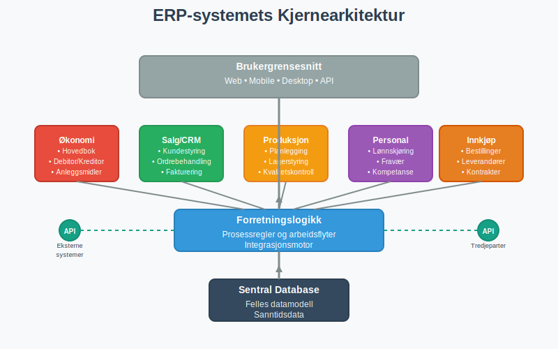
1.1 Historisk Utvikling
ERP-systemer har utviklet seg fra enkle MRP-systemer (Material Requirements Planning) på 1960-tallet til dagens omfattende forretningsplattformer:
- 1960-1970: MRP - Fokus på produksjonsplanlegging
- 1980-1990: MRP II - Utvidet til finansiell planlegging
- 1990-2000: ERP - Integrerte alle forretningsprosesser
- 2000-2010: ERP II - Web-baserte løsninger og e-handel
- 2010-i dag: Cloud ERP - Skybaserte, mobile og AI-drevne systemer
1.2 Kjerneprinsippene
ERP-systemer bygger på fire grunnleggende prinsipper som sikrer effektiv forretningsdrift:
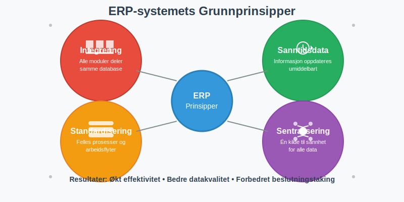
- Integrering: Alle moduler deler samme database og datamodell
- Sanntidsdata: Informasjon oppdateres umiddelbart på tvers av systemet
- Standardisering: Felles forretningsprosesser og arbeidsflyter
- Sentralisering: Én kilde til sannhet for alle forretningsdata
Seksjon 2: Kjernemodulene i ERP-systemer
Moderne ERP-systemer består av flere integrerte moduler som dekker ulike forretningsområder. For norske bedrifter er spesielt økonomi- og regnskapsmodulene kritiske for å oppfylle lovkrav. Disse systemene drar stor nytte av API-integrasjon og automatisering for å sikre sømløs dataflyt mellom ulike forretningsprosesser.
2.1 Økonomi og Regnskap
Økonomimodulen er hjertet i ethvert ERP-system og håndterer all finansiell informasjon. Den integrerer sømløst med bokføring og sikrer automatisk registrering av alle transaksjoner. ERP-systemer er også fundamentale for internregnskap, hvor de gir sanntidsdata for budsjetter, kalkyler og prestasjonsmåling.
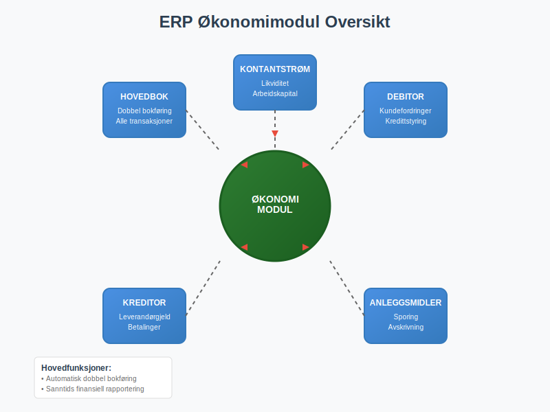
Hovedfunksjoner:
- Hovedbok: Automatisk dobbel bokføring av alle transaksjoner
- Kundefordringer: Håndtering av debitorkontoer og kredittstyring
- Leverandørgjeld: Administrasjon av leverandørfakturaer og betalinger
- Anleggsmidler: Sporing og avskrivning av anleggsmidler
- Kontantstrøm: Sanntidsovervåking av likviditet og arbeidskapital
2.2 Salg og Markedsføring (CRM)
CRM-modulen (Customer Relationship Management) håndterer hele kundelivssyklusen fra prospekt til vedvarende kunde.
Hovedfunksjoner:
- Leadhåndtering: Sporing av potensielle kunder og salgsmuligheter
- Ordrebehandling: Fra tilbud til faktura og levering
- Leveringsdokumentasjon: Automatisk generering av pakkesedler
- Kundeservice: Saksbehandling og supporthistorikk
- Salgsanalyse: Rapporter på salgsytelse og kundelønnsomhet
2.3 Innkjøp og Leverandørstyring
Innkjøpsmodulen optimaliserer anskaffelsesprosesser og leverandørrelasjoner.
Hovedfunksjoner:
- Innkjøpsordrer: Automatisert bestillingsprosess
- Leverandørevaluering: Vurdering av leverandørytelse
- Kontraktstyring: Administrasjon av leverandøravtaler
- Mottakskontroll: Verifisering av leveranser mot bestillinger og pakkesedler
2.4 Produksjon og Operasjoner
For produksjonsbedrifter er dette modulet kritisk for effektiv drift og kostnadskontroll.
Hovedfunksjoner:
- Produksjonsplanlegging: Kapasitetsplanlegging og ressursallokering
- Lagerstyring: Sanntidsoversikt over beholdninger og lagerlokasjonsstyring, ofte integrert med strekkoder for automatisk varesporing
- Kvalitetskontroll: Sporbarhet og kvalitetssikring
- Kostnadsregnskap: Detaljert sporing av produksjonskostnader
2.5 Personal og Lønn (HRM)
HR-modulen håndterer alle personalrelaterte prosesser og integrerer med norske rapporteringskrav.
Hovedfunksjoner:
- Personaladministrasjon: Ansattinformasjon, arbeidsforholdstyper, timeføring og utleggshåndtering
- Lønnskjøring: Automatisk beregning av bruttolønn og arbeidsgiveravgift
- Fravær og permisjon: Registrering og godkjenning av fravær
- Kompetansestyring: Opplæring og utviklingsplaner
Seksjon 3: ERP-systemtyper og Implementeringsmodeller
Moderne ERP-systemer tilbys i flere ulike modeller, hver med sine fordeler og utfordringer for norske bedrifter.
3.1 Sammenligning av ERP-modeller
| Modell | Fordeler | Ulemper | Egnet for |
|---|---|---|---|
| On-Premise | Full kontroll, tilpasning, datasikkerhet | Høye startkostnader, IT-vedlikehold | Store bedrifter med IT-ressurser |
| Cloud ERP | Lave startkostnader, automatiske oppdateringer | Avhengighet av internett, mindre tilpasning | SMB og voksende bedrifter |
| Hybrid | Fleksibilitet, gradvis migrering | Kompleks arkitektur, integrasjonsutfordringer | Bedrifter i overgang |
| SaaS | Rask implementering, forutsigbare kostnader | Begrenset tilpasning, leverandøravhengighet | Små til mellomstore bedrifter |
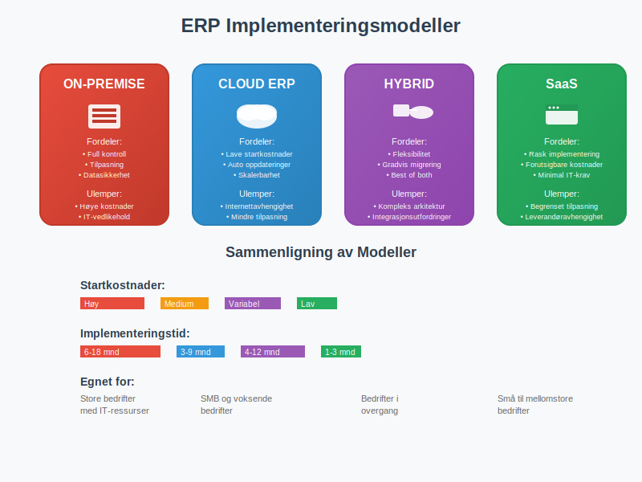
3.2 Populære ERP-systemer i Norge
Norske bedrifter har tilgang til både internasjonale og lokale ERP-løsninger:
Internasjonale løsninger:
- SAP: Markedsleder for store bedrifter
- Microsoft Dynamics 365: Populær for mellomstore bedrifter
- Oracle NetSuite: Cloud-basert løsning for SMB
- Infor: Bransjespesifikke løsninger
Norske/Nordiske løsninger:
- Visma: Sterk posisjon i det norske markedet
- Unit4: Fokus på service-orienterte bedrifter
- IFS: Sterk innen produksjon og vedlikehold
Seksjon 4: Integrasjon med Norsk Regnskapsføring
For norske bedrifter er det kritisk at ERP-systemet støtter lokale regnskapskrav og integrasjon med offentlige systemer.
4.1 Lovpålagt Rapportering
ERP-systemer må håndtere alle norske rapporteringskrav automatisk:
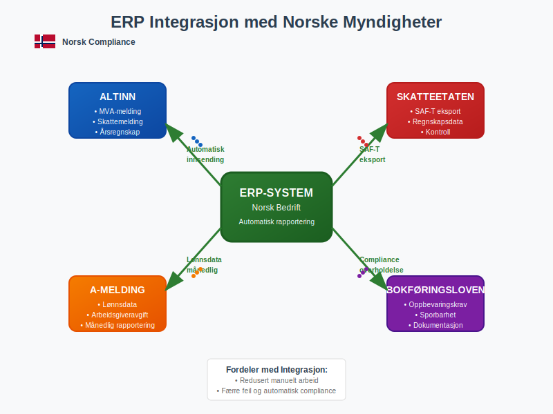
Kritiske integrasjoner:
- Altinn: Automatisk innsending av MVA-melding og skattemelding
- A-melding: Månedlig rapportering av lønnsdata
- SAF-T: Standardisert regnskapseksport for Skatteetaten
- Bokføringsloven: Overholdelse av oppbevaringskrav
4.2 Automatisert Bilagsbehandling
Moderne ERP-systemer automatiserer hele bilagsbehandlingen fra mottak til arkivering:
Prosessflyt:
- Mottakskontroll: Automatisk lesing av fakturaer (OCR/AI)
- Attestering: Digital godkjenningsflyt
- Kontering: Automatisk forslag basert på historikk
- Bokføring: Umiddelbar registrering i hovedbok
- Arkivering: Digital oppbevaring i henhold til lovkrav
4.3 Bankavstemming og Betalinger
ERP-systemer integrerer direkte med norske banker for effektiv kontantstrømstyring:
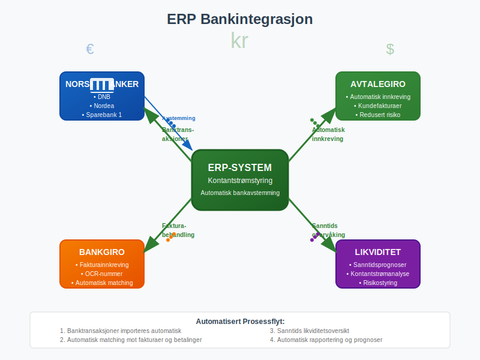
Hovedfunksjoner:
- Automatisk bankavstemming: Matching av banktransaksjoner
- AvtaleGiro: Automatisk innkreving
- BankGiro: Effektiv fakturainnkreving
- Likviditetsprognoser: Sanntidsovervåking av kontantstrøm
Seksjon 5: Implementeringsprosessen
Vellykket ERP-implementering krever grundig planlegging og systematisk tilnærming. For norske bedrifter er det spesielt viktig å sikre overholdelse av lokale krav.
5.1 Implementeringsfaser
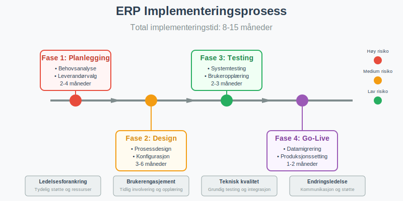
Fase 1: Planlegging og Analyse (2-4 måneder)
- Behovsanalyse: Kartlegging av eksisterende prosesser
- Leverandørvalg: Evaluering av ERP-systemer
- Prosjektorganisering: Etablering av prosjektteam
- Budsjett og tidslinje: Detaljert prosjektplan
Fase 2: Design og Konfigurasjon (3-6 måneder)
- Prosessdesign: Optimalisering av forretningsprosesser
- Systemkonfigurasjon: Tilpasning til bedriftens behov
- Integrasjonsdesign: Planlegging av systemintegrasjoner
- Testplanlegging: Utvikling av testscenarier
Fase 3: Testing og Opplæring (2-3 måneder)
- Systemtesting: Verifisering av funksjonalitet
- Integrasjonstesting: Testing av dataflyt mellom systemer
- Brukeropplæring: Kompetansebygging for sluttbrukere
- Dokumentasjon: Utvikling av brukermanualer
Fase 4: Produksjonssetting (1-2 måneder)
- Datamigrering: Overføring av historiske data
- Go-live: Oppstart av produksjonssystem
- Støtte og overvåking: Intensiv brukersstøtte
- Stabilisering: Finjustering og optimalisering
5.2 Kritiske Suksessfaktorer
Ledelsesforankring:
- Tydelig støtte fra toppledelsen
- Tilstrekkelige ressurser og budsjett
- Realistiske forventninger og tidsrammer
Brukerengasjement:
- Tidlig involvering av sluttbrukere
- Omfattende opplæringsprogram
- Effektiv endringsledelse
Teknisk kvalitet:
- Grundig testing av alle funksjoner
- Robust datamigreringsstrategi
- Sikker integrasjon med eksisterende systemer
5.3 Vanlige Utfordringer og Løsninger
| Utfordring | Årsak | Løsning |
|---|---|---|
| Budsjettoverskridelser | Underestimering av kompleksitet | Detaljert planlegging, buffer i budsjett |
| Forsinkelser | Scope creep, tekniske problemer | Streng prosjektstyring, fasevis implementering |
| Brukerresistanse | Mangel på involvering, frykt for endring | Tidlig kommunikasjon, omfattende opplæring |
| Dataproblemer | Dårlig datakvalitet, kompleks migrering | Datarensing, grundig testing |
| Integrasjonsfeil | Undervurdert kompleksitet | Tidlig integrasjonstesting, ekspertbistand |
Seksjon 6: Fordeler og Gevinster
ERP-systemer leverer betydelige fordeler for norske bedrifter når de implementeres og brukes korrekt.
6.1 Operasjonelle Fordeler
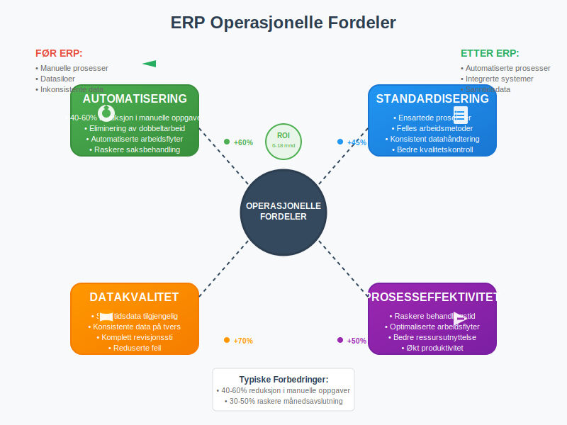
Prosesseffektivisering:
- Automatisering: Reduksjon av manuelle oppgaver med 40-60%
- Standardisering: Ensartede prosesser på tvers av organisasjonen
- Eliminering av dobbeltarbeid: Én registrering, flere anvendelser
- Raskere saksbehandling: Automatiserte arbeidsflyter
Forbedret Datakvalitet:
- Sanntidsdata: Oppdatert informasjon tilgjengelig umiddelbart
- Konsistens: Samme data brukt av alle avdelinger
- Sporbarhet: Komplett revisjonssti for alle transaksjoner
- Reduserte feil: Automatisk validering og kontroller
6.2 Strategiske Fordeler
Bedre Beslutningstaking:
- Sanntidsrapportering: Umiddelbar tilgang til nøkkeltall
- Integrerte dashboards: Helhetlig oversikt over virksomheten
- Prediktiv analyse: AI-drevne prognoser og anbefalinger
- Benchmarking: Sammenligning med bransjestandarder
Økt Skalerbarhet:
- Fleksibel arkitektur: Enkel tilpasning til vekst
- Modulær oppbygging: Gradvis utvidelse av funksjonalitet
- Cloud-skalerbarhet: Automatisk ressursallokering
- Global støtte: Håndtering av internasjonale operasjoner
6.3 Finansielle Gevinster
Norske bedrifter rapporterer typisk følgende finansielle gevinster etter ERP-implementering:
| Gevinst | Typisk Forbedring | Tidshorisont |
|---|---|---|
| Reduserte administrative kostnader | 15-25% | 6-12 måneder |
| Forbedret arbeidskapital | 10-20% | 12-18 måneder |
| Raskere månedsavslutning | 30-50% | 3-6 måneder |
| Økt kundetilfredshet | 15-30% | 6-12 måneder |
| Bedre leverandørforhandlinger | 5-15% | 12-24 måneder |
Seksjon 7: Fremtidige Trender og Teknologier
ERP-systemer utvikler seg raskt med nye teknologier som kunstig intelligens, maskinlæring og Internet of Things (IoT).
7.1 Kunstig Intelligens og Maskinlæring
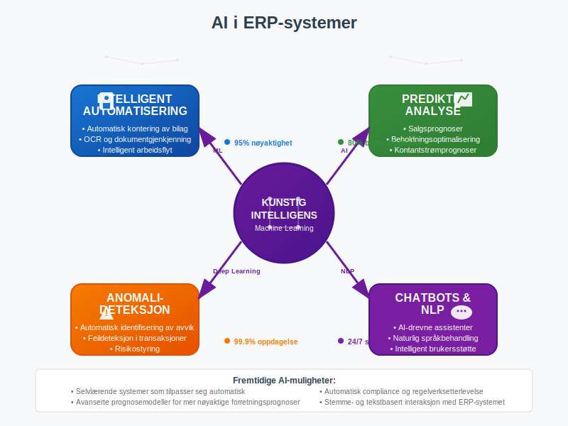
Aktuelle AI-anvendelser:
- Intelligent automatisering: Automatisk kontering av bilag
- Prediktiv analyse: Prognoser for salg, beholdning og kontantstrøm
- Anomalideteksjon: Automatisk identifisering av avvik og feil
- Chatbots: AI-drevne assistenter for brukersstøtte
- Intelligent rapportering: Automatisk generering av innsikter
Fremtidige muligheter:
- Selvlærende systemer: ERP som tilpasser seg automatisk
- Naturlig språkbehandling: Stemme- og tekstbasert interaksjon
- Avansert prognosemodeller: Mer nøyaktige forretningsprognoser
- Automatisk compliance: AI som sikrer regelverksetterlevelse
7.2 Cloud-First og Mobile ERP
Cloud-fordeler:
- Skalerbarhet: Automatisk ressursallokering
- Kostnadseffektivitet: Reduserte IT-kostnader
- Tilgjengelighet: 24/7 tilgang fra hvor som helst
- Automatiske oppdateringer: Alltid siste versjon
Mobile ERP-funksjoner:
- Godkjenningsflyter: Mobil attestering av bilag
- Sanntidsrapporter: Tilgang til nøkkeltall på mobil
- Feltregistrering: Direkte registrering fra kunde/leverandør
- Push-varsler: Umiddelbare meldinger om kritiske hendelser
7.3 Internet of Things (IoT) Integrasjon
IoT-sensorer og smarte enheter integreres stadig mer med ERP-systemer:
Anvendelsesområder:
- Smart lagerstyring: Automatisk beholdningsregistrering
- Prediktivt vedlikehold: Sensorer som varsler om vedlikeholdsbehov
- Kvalitetskontroll: Kontinuerlig overvåking av produksjonsprosesser
- Energioptimalisering: Smart styring av energiforbruk
Et fremragende eksempel på IoT-integrasjon med ERP-systemer finner vi i landbrukssektoren, hvor landbrukets dataflyt viser hvordan sensorer, maskiner og automatiserte systemer kan integreres sømløst med regnskapssystemer for helhetlig forretningsstyring.
Seksjon 8: Valg av ERP-system for Norske Bedrifter
Å velge riktig ERP-system er en kritisk beslutning som påvirker bedriftens drift i mange år fremover.
8.1 Evalueringskriterier
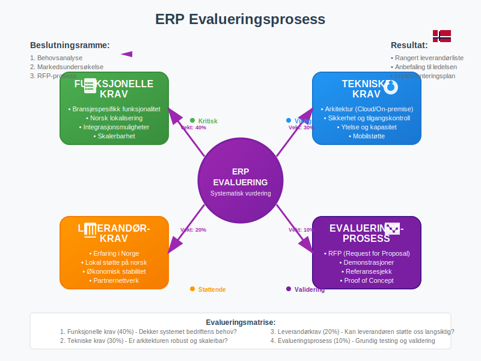
Funksjonelle krav:
- Bransjespesifikk funksjonalitet: Støtte for bedriftens unike behov
- Norsk lokalisering: Støtte for norske regnskapskrav og rapportering
- Integrasjonsmuligheter: Kobling til eksisterende systemer
- Skalerbarhet: Mulighet for fremtidig vekst
Tekniske krav:
- Arkitektur: Cloud, on-premise eller hybrid
- Sikkerhet: Databeskyttelse og tilgangskontroll, inkludert tofaktorautentisering
- Ytelse: Responstid og systemkapasitet
- Mobilstøtte: Tilgang fra mobile enheter
Leverandørkrav:
- Erfaring: Dokumentert suksess i Norge
- Support: Lokal støtte på norsk
- Økonomisk stabilitet: Leverandørens langsiktige levedyktighet
- Partnernettverk: Tilgang til implementeringspartnere
8.2 Total Cost of Ownership (TCO)
Ved evaluering av ERP-systemer må norske bedrifter vurdere alle kostnader over systemets levetid:
| Kostnadskategori | On-Premise | Cloud ERP | Kommentarer |
|---|---|---|---|
| Lisenskostnader | Høy engangskostnad | Månedlig/årlig abonnement | Cloud gir forutsigbare kostnader |
| Implementering | 1-3x lisenskost | 0.5-1.5x årlig abonnement | Cloud raskere å implementere |
| Hardware/infrastruktur | Høy | Minimal | Cloud eliminerer serverkostnader |
| IT-drift og vedlikehold | 15-25% årlig | Inkludert i abonnement | Cloud reduserer IT-belastning |
| Oppgraderinger | Høy prosjektkostnad | Inkludert | Cloud gir kontinuerlige forbedringer |
| Opplæring | Høy ved oppgraderinger | Kontinuerlig | Cloud krever løpende kompetansebygging |
8.3 Implementeringspartnere
Valg av riktig implementeringspartner er like viktig som valg av ERP-system:
Evalueringskriterier for partnere:
- Sertifiseringer: Offisiell partnerstatus hos leverandør
- Bransjeerfaring: Dokumentert erfaring fra lignende bedrifter
- Metodikk: Strukturert implementeringsmetodikk
- Referanser: Verifiserbare kundesuksesser
- Støtte: Langsiktig support og vedlikehold
Seksjon 9: ERP og Compliance i Norge
For norske bedrifter er det kritisk at ERP-systemet støtter alle lovpålagte krav til regnskapsføring og rapportering.
9.1 Regnskapsmessige Krav
ERP-systemer må støtte alle aspekter av norsk regnskapslovgivning:
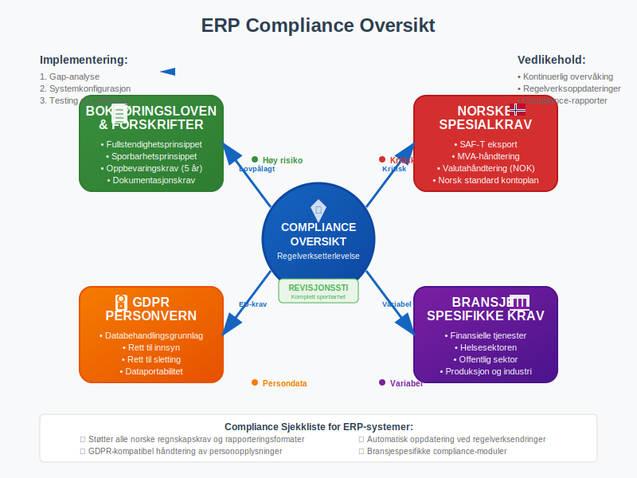
Bokføringsloven og forskrifter:
- Fullstendighetsprinsippet: Alle transaksjoner må registreres
- Sporbarhetsprinsippet: Klar sammenheng mellom bilag og bokføring
- Oppbevaringskrav: Digital arkivering i minimum 5 år
- Dokumentasjonskrav: Tilstrekkelig dokumentasjon av alle poster
Spesielle norske krav:
- SAF-T eksport: Standardisert regnskapseksport
- MVA-håndtering: Automatisk MVA-beregning og rapportering
- Valutahåndtering: Støtte for NOK og utenlandsk valuta
- Kontoplan: Norsk standard kontoplan
9.2 Personvernforordningen (GDPR)
ERP-systemer håndterer store mengder personopplysninger og må overholde GDPR:
Viktige GDPR-krav:
- Databehandlingsgrunnlag: Lovlig grunnlag for all databehandling
- Rett til innsyn: Mulighet for personer å se sine data
- Rett til sletting: Systematisk sletting av utdaterte data
- Dataportabilitet: Eksport av data i strukturert format
- Personvernbrudd: Rutiner for håndtering av databrudd
9.3 Bransjespesifikke Krav
Ulike bransjer har spesifikke krav som ERP-systemet må støtte:
Finansielle tjenester:
- Kapitalkrav: Beregning og rapportering av kapitaldekning
- Risikostyring: Overvåking av kreditt- og markedsrisiko
- Compliance rapportering: Automatisk rapportering til Finanstilsynet
Helsesektoren:
- Pasientjournaler: Sikker håndtering av helseopplysninger
- Medisinsk utstyr: Sporing og vedlikehold av medisinsk utstyr
- Kvalitetssikring: Dokumentasjon av behandlingskvalitet
Offentlig sektor:
- Offentlighetsloven: Håndtering av offentlige dokumenter
- Anskaffelsesregler: Overholdelse av offentlige anskaffelsesregler
- Budsjettstyring: Detaljert budsjettkontroll og rapportering
Seksjon 10: Måling av ERP-suksess
Etter implementering er det viktig å måle om ERP-systemet leverer forventede gevinster.
10.1 Nøkkelindikatorer (KPIer)
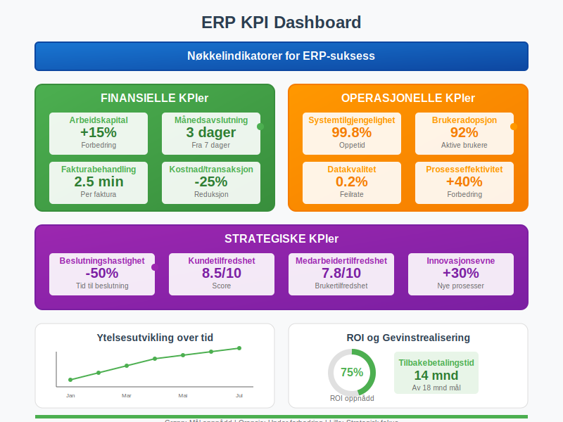
Finansielle KPIer:
- Arbeidskapital: Forbedring av kontantstrøm
- Sysselsatt kapital: Optimalisering av total kapitaleffektivitet og ROCE-måling
- Månedlig avslutning: Tid fra månedslutt til ferdig regnskap
- Fakturabehandling: Gjennomsnittlig behandlingstid per faktura
- Kostnader per transaksjon: Reduksjon i administrative kostnader
Operasjonelle KPIer:
- Systemtilgjengelighet: Oppetid og ytelse
- Brukeradopsjon: Andel aktive brukere
- Datakvalitet: Feilrate i registreringer
- Prosesseffektivitet: Reduksjon i behandlingstid
Strategiske KPIer:
- Beslutningshastighet: Tid fra data til beslutning
- Kundetilfredshet: Forbedring i kundeopplevelse
- Medarbeidertilfredshet: Brukertilfredshet med systemet
- Innovasjonsevne: Evne til å implementere nye prosesser
10.2 Kontinuerlig Forbedring
ERP-systemer krever kontinuerlig optimalisering for å levere maksimal verdi:
Optimaliseringsområder:
- Prosessforbedring: Regelmessig gjennomgang av arbeidsflyter
- Brukeropplæring: Kontinuerlig kompetanseheving
- Systemoppdateringer: Utnyttelse av nye funksjoner
- Integrasjoner: Utvidelse med nye systemer og tjenester
Best practices:
- Månedlige brukergrupper: Forum for tilbakemeldinger og forbedringer
- Kvartalsvis systemgjennomgang: Evaluering av ytelse og gevinster
- Årlig strategisk vurdering: Vurdering av fremtidige behov
- Leverandørsamarbeid: Tett dialog med ERP-leverandør
Konklusjon
ERP-systemer representerer ryggraden i moderne forretningsdrift for norske bedrifter. Når de implementeres og brukes korrekt, leverer de betydelige gevinster i form av økt effektivitet, bedre datakvalitet og forbedret beslutningstaking.
Nøkkelen til suksess ligger i:
- Grundig planlegging: Detaljert analyse av behov og krav
- Riktig systemvalg: ERP som matcher bedriftens størrelse og bransje
- Profesjonell implementering: Erfarne partnere og strukturert tilnærming
- Brukerengasjement: Omfattende opplæring og endringsledelse
- Kontinuerlig forbedring: Løpende optimalisering og utvikling
For norske bedrifter som vurderer ERP-implementering, er det viktig å huske at dette er en langsiktig investering som krever betydelige ressurser, men som kan transformere virksomheten fundamentalt. Med riktig tilnærming og forventninger kan ERP-systemer bli en kritisk konkurransefordel i dagens digitale økonomi.
Integrasjonen med norske regnskapskrav, fra bokføring til MVA-rapportering, gjør ERP-systemer til en naturlig utvidelse av bedriftens regnskapsfunksjon og en investering i fremtidens digitale forretningsdrift.